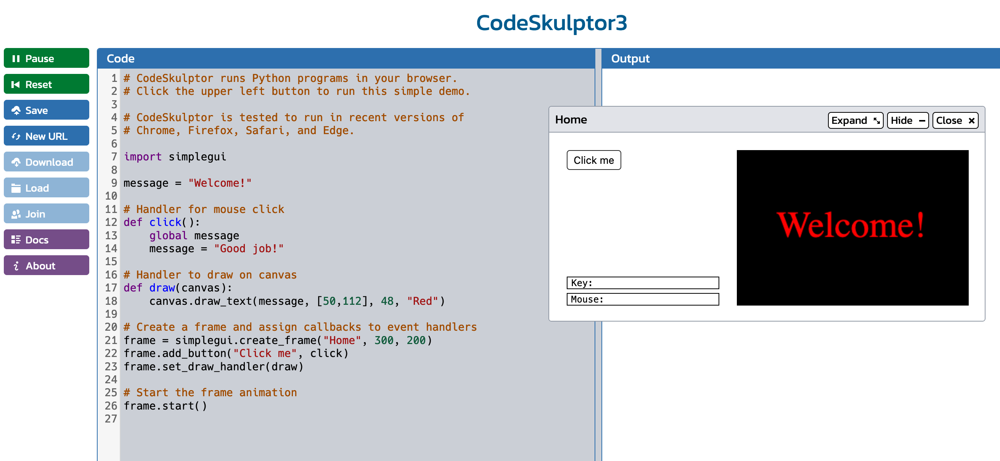
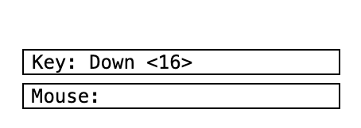
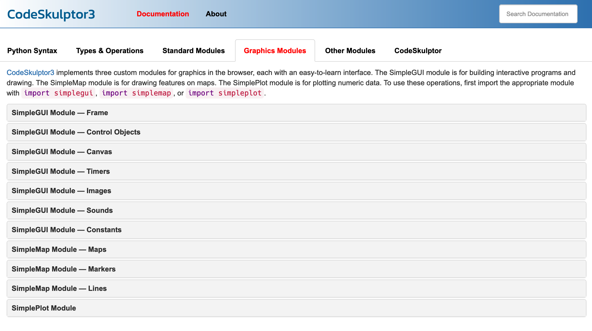
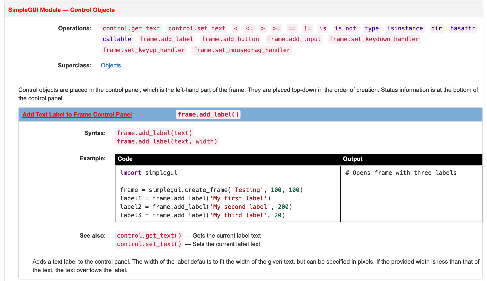

10.4. The SimpleGUI Module¶
The SimpleGUI module was created specifically to help students learn and experiment with event-based interactions. It was designed to work in a web version of Python called CodeSkulptr 3. Unfortunately, simpleGUI is not a module that works inside the Runestone textbook, it only works in CodeSkulptr. Here is a screenshot of what CodeSkulptr 3 looks like when you first open it, and press the Run button at the top-left:
{kind=link}
This screenshot shows that CodeSkulptr 3 provides a window for entering text and a sample script to get you started. On the left are buttons for you to control the CodeSkultpr web page interface, including running, saving and loading scripts, accessing documentation, and a ‘join’ button that allows you to share access to your script with a classmate, so that you can work on it together.
On the right there is an Output window, which is basically just a console. Any print() output will show up there.
When you run the starter script that is provided, you will also see that a window pops up. This window has a canvas and a button. When this window first appears, it displays the message “Welcome!”. When you click the ‘Click me’ button, the message in the canvas changes to “Good job!”.
Let’s examine the lines of code in this script to understand what is happening.
Line 7 has the import statement that gives us access to the simpleGUI module
Lines 12-14 define a handler function that defines what happens when the user clicks the button.
Line 13 gives us access to the global variable message, and Line 14 changes the value of that variable
Lines 17 and 18 have a draw() function that defines what should be drawn on the canvas The simpleGUI module calls this function automatically, many times per second, to redraw the canvas and keep it up to date as the user interacts with the program.
Line 21 creates the window, using the create_frame method of the simplegui module. It gives the window a title (“Home”) and a size in pixels for a canvas that will be drawn on the right side of the window (the canvas in this default example is 300 pixels wide by 200 pixels tall). The window that is created is assigned to a variable called ‘frame’. When you create a frame in simpleGUI, you get an area on the left for placing interface controls and an area on the right for the canvas.
Line 22 adds a button to ‘frame’, with the label “Click me”, and it also registers that when the button is clicked by the user, the function ‘click()’ should be called
Line 23 defines what function should be called to redraw the window. This starter script follows a standard programming convention for this and calls the function ‘draw()’
Go to CodeSkulptr 3 and play with this code: https://py3.codeskulptor.org/. Run the script and then do a few simple edits, testing the program after each:
Change the text on the button so that it says “Update” instead of “Click me”.
Rename the button handler to button_click instead of click. Make sure you update this in the function definition and in the line of code that creates the button
Change the button handler function so that it sets the message to be “Hello!”
The window that pops up when you run a CodeSkulptr script with the SimpleGUI module has two labels at the bottom left. These are provided by SimpleGUI as an aid to help novice programmers understand what mouse and keyboard events the SimpleGUI module is recieving.
{kind=link}
Play around with clicking the mouse in the canvas and typing keys on the keyboard to see these indicators change. Note that just because the SimpleGUI module sees the events doesn’t mean something will happen in the canvas window in response to clicks and keypresses. It is up to you to write code to tell the SimpleGUI module and the Python interpreter that you want something to happen in response to such events.
10.4.1. Using Toolkit Documentation¶
There are many different toolkits that you can use for building GUIs (and for other things, too). Every toolkit handles input events slightly differently and offers slightly different sets of interface controls. So, one of the most important skills you can develop is learning how to read the documentation for a toolkit to figure out how to use it. No-one memorizes all the events and controls that a toolkit handles, unless they happen to use that toolkit every day. So, when seasoned programmers need to use a toolkit, they typically have the documentation window for that toolkit open in a browser, so they can refer to it as they build their program. Clicking the Docs button in the CodeSkulptr 3 interface will automatically open the documentation for you in a new browser tab. Switch to this tab and then click on Graphics Modules. You should see this:
{kind=link}
The CodeSkulptr system has 3 different modules for graphical applications: SimpleGUI, SimpleMap and SimplePlot. We are only going to look at SimpleGUI (but you should feel free to explore the other two modules on your own). There are a number of different documentation sections for the SimpleGUI module. In order to build a GUI interface, what we are most interested in is the Control Objects, so click on that section to open it.

When you open this you will see that you can add various controls and user input handlers to a frame: lables, buttons, text input boxes, and keyboard and mouse event handlers. We’ll talk about the event handlers in the next section. For now let’s look at adding text labels. Click on the Add Text Label section and you will see the following:
{kind=link}
There are three sections to the documentation for this function: Syntax, Example, and See also. The Syntax information shows how to use the command, including what parameters you need to specify. This particular documentation shows you that you can use the add_label() method on a window frame object. Assuming you have called your window ‘frame’, you simply type either ‘frame.add_label(“Label Text”) or you can add a width for the size of the label, like this: ‘frame.add_label(“Label Text”, 100)’. When you look at the Example information, it shows how to use this method in a complete code sample. Here you see that it is customary to assign a label to a variable called something like ‘label1’ or ‘label2’. Assigning a label (or other user interface widget) to a variable means you can access that widget to do things with it. The See also section tells you that there are some related methods you might want to know about. In this case, the related methods allow you to get the current text that a label is showing, and also change the text that a label is showing.